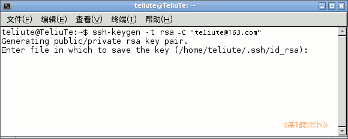
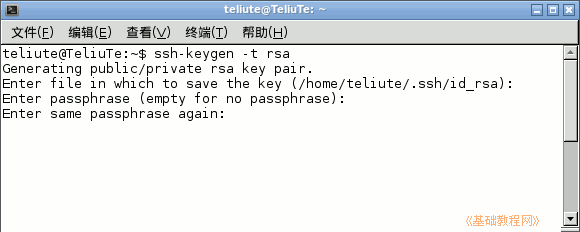
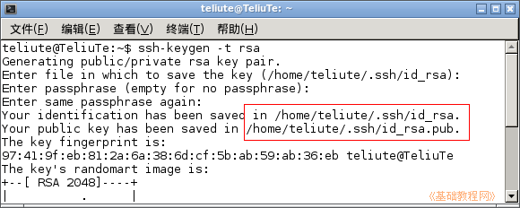
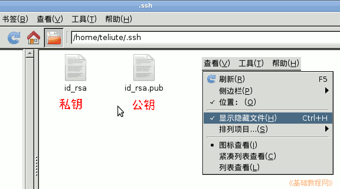
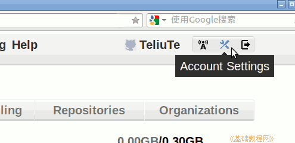
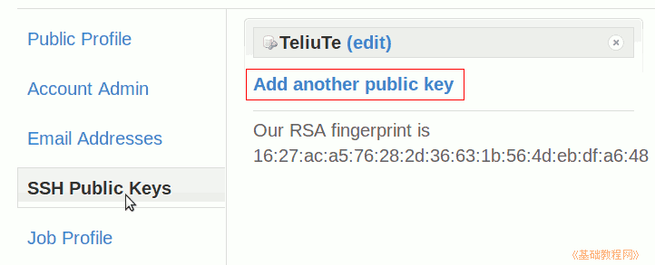
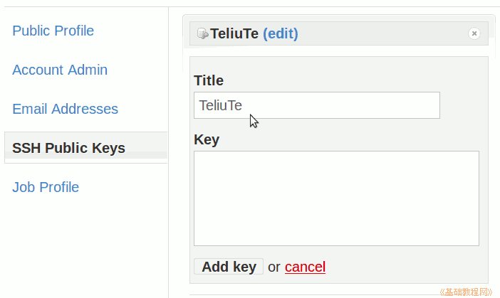
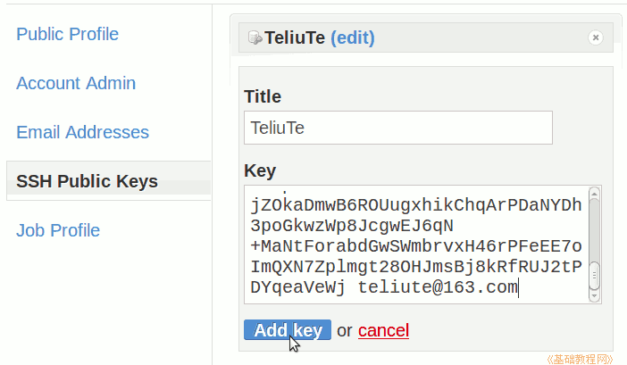

git 操作指南
作者：TeliuTe 来源：基础教程网
二、创建SSH密钥 返回目录 下一课这个密钥用来跟 github 通信，在本地终端里生成然后上传到 github；
1、创建SSH密钥
1）打开终端，输入命令 ssh-keygen -t rsa -C "teliute@163.com" 然后按回车键，双引号里的邮箱换成自己的；

2）按回车保存到默认位置，再稍等出来提示输入密码短语，输完按回车要输两遍；它用来加密私钥，也就是以后使用私钥的时候要输这个密码；

3）稍等出来提示成功，密钥存放在自己主文件夹的.ssh文件夹中；

4）打开文件管理器，显示隐藏文件后，可以看到这个文件夹中有两个文件，一个私钥一个公钥，把这个文件夹备份一下，

打开公钥文件，把里面的内容全部选中以后复制一下，等会要用到；
5）接下来登录 github，在右上角自己的用户名旁边找到扳手图标设置账户，在设置页面右边找到 SSH Public Keys，点击进入；

6）点右边出来的 Add another public key；

7）在 Title 里输一个名称，下面的 Key 里一会粘贴自己的公钥；

8）到刚才的.ssh文件夹中，双击打开自己的公钥文件 id_rsa.pub，复制里面的所有内容，然后粘贴到刚才的密钥导入框中，然后点下边的“Add Key”导入密钥；

本节学习了创建SSH密钥的基础知识，如果你成功地完成了练习，请继续学习下一课内容；
本教程由86团学校TeliuTe制作|著作权所有
基础教程网：http://teliute.org/
美丽的校园……
转载和引用本站内容，请保留版权信息和本站链接。